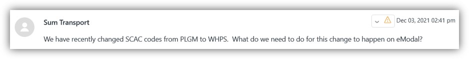
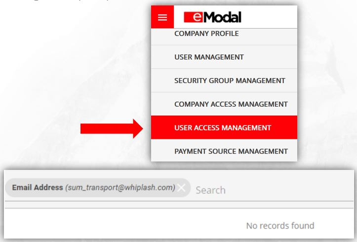
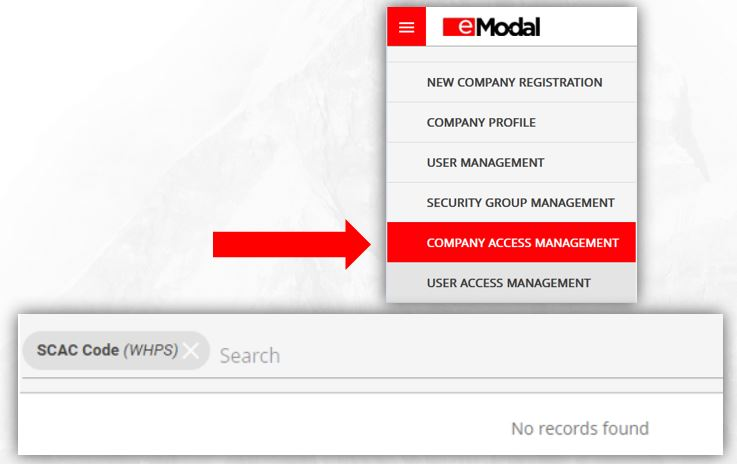
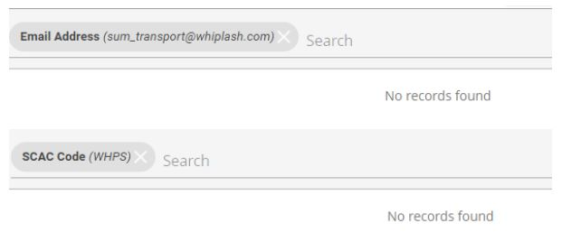
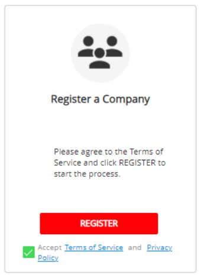
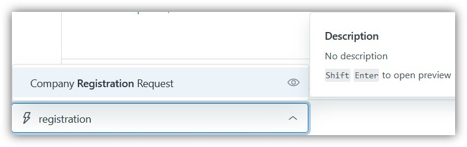

Case 1: No User Profile; No Company Registration
Let’s take a look at this sample ticket.

1. From the left side menu, navigate to Administration and select User Access Management (UAM). Check the Username or Email address in UAM.

2. From the left side menu, navigate to Administration and select Company Access Management (CAM). Check the SCAC/Company Name in CAM.

3. Once checked, send a reply to the customer. See the below response.
Hello Whiplash,
Good day!
Thank you for contacting eModal Support. I’ll be happy to clarify your concern about your account.
As per checking, both your company WHIPLASH (WHPS) and e-mail sum_transport@whiplash.com are not currently registered in eModal system as shown below screenshots:

To register your company, please follow the below steps:
1. From the Home page, select Register Now.

2. In the Company Registration box, check your agreement to the terms of service (bottom right) and select Register.
3. Complete the Primary Information Page and Company Details page and select Continue at the bottom right.
4. Check your email for your Verification Code and verify your email.
5. Log back in and register the account.
Note: Once we verify and approve your application, you can already access fully the eModal Portal. Also, make sure all the information is matched on the NMFTA website for faster approval.
You may refer to the links below for your reference :
RESOURCE GUIDE FOR ADMINISTRATORS
Should you need further assistance, please do not hesitate to reach me back. Have a great day!
Best,
Allan
eModal Customer Support
For real-time updates, check out the eModal Status Page!
You can type in “registration” in the Apply macro and personalize the response.
